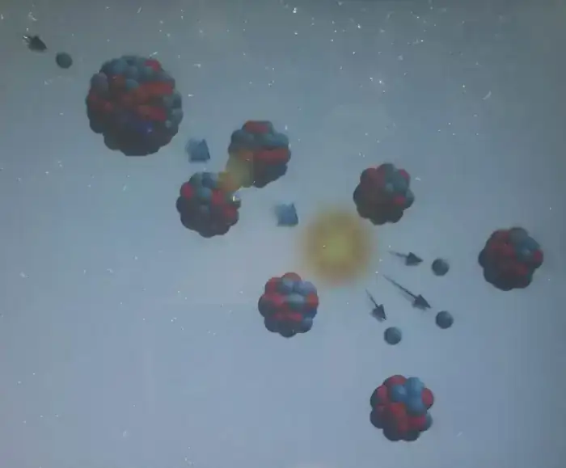

Why physicists wanted it
Supersymmetry (SUSY) pairs every known particle with a partner of opposite spin statistics — selectrons for electrons, squarks for quarks, photinos and higgsinos for the gauge bosons and Higgs. It is the only known extension of spacetime symmetry consistent with quantum field theory.
Maps, diagrams and images


It offered three prizes: the gauge couplings of the Standard Model meet at a single energy if superpartners are included; the lightest superpartner is a natural dark-matter candidate; and it stabilises the Higgs mass against huge quantum corrections — the hierarchy problem.
What the LHC found
Nothing. Searches at the LHC have pushed the mass limits for strongly interacting superpartners into the multi-TeV range, far above the light values that the naturalness argument preferred.
That does not logically exclude SUSY: raise the masses enough and the theory survives, but the hierarchy problem returns, which removes a main motivation. This is the 'little hierarchy problem', and it has led to a decade of argument about whether naturalness was ever a good criterion.
Excluded: the simplest versions, with light squarks and gluinos, that would have been produced copiously at the LHC.
Still viable: high-mass SUSY, split SUSY, certain compressed spectra that are hard to detect, and SUSY as part of a string framework.
Dark matter: a neutralino is still a candidate, but direct-detection experiments have tightened limits considerably; other candidates such as axions and WIMPs outside SUSY are equally live.
Not testable soon: if superpartners sit above the reach of the LHC, progress may need a future collider. That is a statement about experimental capability, not about truth.
Why it is in the archive
Because 'the LHC disproved supersymmetry' and 'supersymmetry is the theory of everything' are both wrong, and the real situation — a beautiful idea with no evidence — is more interesting than either.
Related: magnetic monopoles, the muon's wobble.
Sources for this page
- Wikipedia, “Supersymmetry” — motivation, status, criticismen.wikipedia.org
- ATLAS Collaboration, public supersymmetry resultstwiki.cern.ch
- Wikipedia, “Hierarchy problem” — naturalness and its criticsen.wikipedia.org
- Wikipedia, “Dark matter” — candidate inventory and limitsen.wikipedia.org
Open resources on this topic
- BookAnalyzing various mathematical connections between the Ramanujan’s numbers 1729, 728, the Ramanujan’s class in — Michele Nardelli, Antonio Nardelli · 2021 (Internet Archive, free to read)
- BookSupersymmetry — K. Diet, R. Flume, G.V. Gehlen and V. Rittenberg · 1985 (Internet Archive, free to read)
- BookDetermining the Structure of Supersymmetry-Breaking with Renormalization Group Invariants — ['Marcela Carena', 'Patrick Draper', 'Nausheen R. Shah', 'Ca · 2010 (Internet Archive, free to read)
- PapersOpen-access articles: DOAJ · PubMed Central · Internet Archive Scholar
- BooksPublic-domain and borrowable copies: Open Library · Project Gutenberg · Google Books
Cite this page
Momin, S. (2026). Supersymmetry. The Larger World Archive. https://drsamonline.github.io/LARGE_GLOBE/supersymmetry.htmlMomin, Sohil. “Supersymmetry.” The Larger World Archive, 2026, https://drsamonline.github.io/LARGE_GLOBE/supersymmetry.html.Momin, Sohil. “Supersymmetry.” The Larger World Archive, 2026. https://drsamonline.github.io/LARGE_GLOBE/supersymmetry.html.@misc{supersymmetry2026supersymmetry,
author = {Momin, Sohil},
title = {Supersymmetry},
year = {2026},
howpublished = {The Larger World Archive},
url = {https://drsamonline.github.io/LARGE_GLOBE/supersymmetry.html},
note = {Last reviewed 20 November 2026}
}Last reviewed 20 November 2026 · Corrections policy · this page is not peer reviewed